-
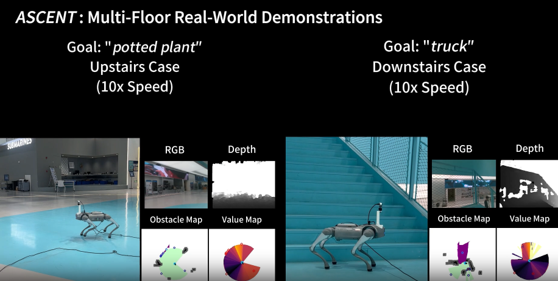
Stairway to Success: Zero-Shot Floor-Aware Object-Goal Navigation via LLM-Driven Coarse-to-Fine Exploration
Zeying Gong, Rong Li, Tianshuai Hu, Ronghe Qiu, Lingdong Kong, Lingfeng Zhang, Yiyi Ding, Leying Zhang, Junwei Liang*
IEEE Robotics and Automation Letters (RA-L) 2026
-
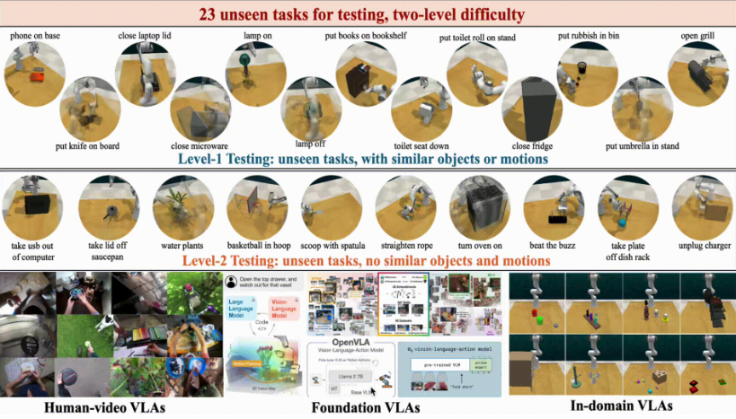
Exploring the Limits of Vision-Language-Action Manipulations in Cross-task Generalization
Jiaming Zhou, Ke Ye, Jiayi Liu, Teli Ma, Zifan Wang, Ronghe Qiu, Kun-Yu Lin, Zhilin Zhao, Junwei Liang*
NeurIPS 2025
-
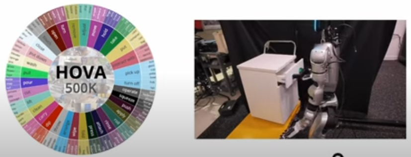
GLOVER++: Unleashing the Potential of Affordance Learning from Human Behaviors for Robotic Manipulation
Teli Ma, Jia Zheng, Zifan Wang, Ziyao Gao, Jiaming Zhou, Junwei Liang*
CoRL 2025
-
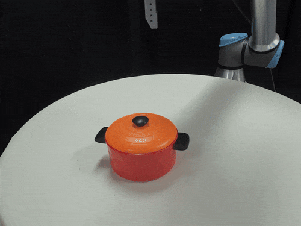
GLOVER: Generalizable Open-Vocabulary Affordance Reasoning for Task-Oriented Grasping
Teli Ma, Zifan Wang, Jiaming Zhou, Mengmeng Wang, Junwei Liang*
CoRL 2025 GenPriors Workshop
🥇Best Paper Award
-
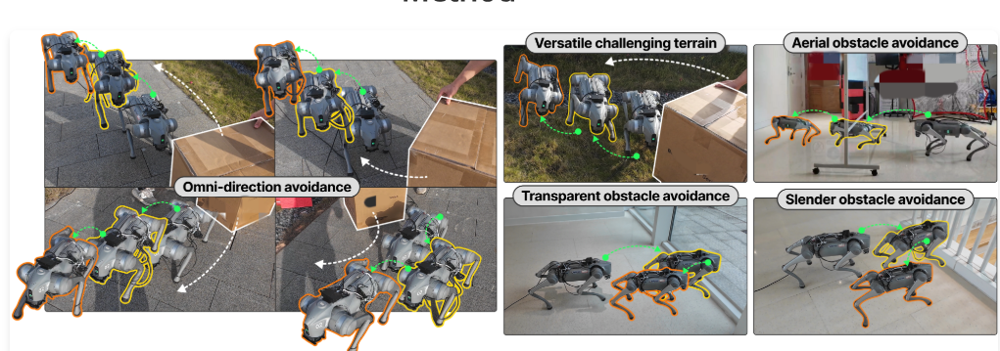
Omni-Perception: Omnidirectional Collision Avoidance for Legged Locomotion in Dynamic Environments
Zifan Wang, Teli Ma, Yufei Jia, Xun Yang, Jiaming Zhou, Wenlong Ouyang, Qiang Zhang, Junwei Liang*
CoRL 2025
(Oral, ~5% acceptance rate)
-
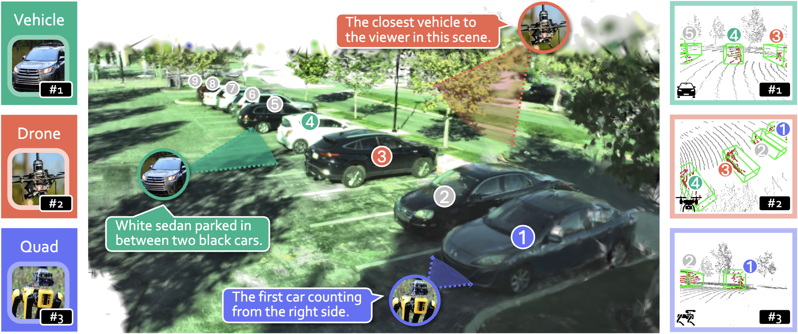
3EED: Ground Everything Everywhere in 3D
Rong Li, Yuhao Dong, Tianshuai Hu, Ao Liang, Youquan Liu, Dongyue Lu, Liang Pan, Lingdong Kong, Junwei Liang*, Ziwei Liu*
NeurIPS 2025
-
Mitigating the Human-Robot Domain Discrepancy in Visual Pre-training for Robotic Manipulation
Jiaming Zhou, Teli Ma, Kun-Yu Lin, Ronghe Qiu, Zifan Wang, Junwei Liang*
CVPR 2025
-
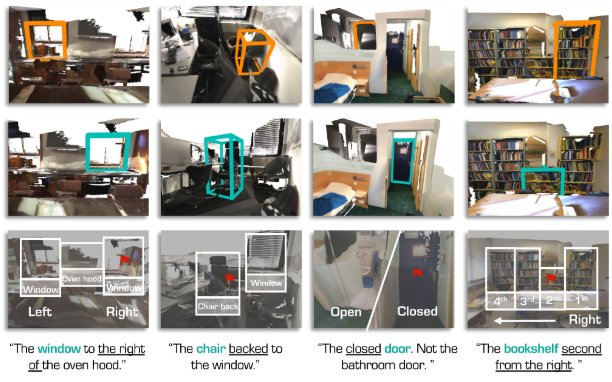
SeeGround: See and Ground for Zero-Shot Open-Vocabulary 3D Visual Grounding
Rong Li, Shijie Li, Lingdong Kong, Xulei Yang, Junwei Liang*
CVPR 2025
-
From Cognition to Precognition: A Future-Aware Framework for Social Navigation
Zeying Gong, Tianshuai Hu, Ronghe Qiu, Junwei Liang*
ICRA 2025
-
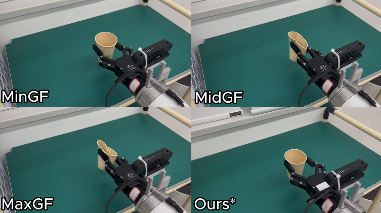
GaussianProperty: Integrating Physical Properties to 3D Gaussians with LMMs
Xinli Xu, Wenhang Ge, Dicong Qiu, ZhiFei Chen, Dongyu Yan, Zhuoyun Liu, Haoyu Zhao, Hanfeng Zhao, Shunsi Zhang, Junwei Liang*, Ying-Cong Chen*
ICCV 2025
-
Contrastive Imitation Learning for Language-guided Multi-Task Robotic Manipulation
Teli Ma, Jiaming Zhou, Zifan Wang, Ronghe Qiu, Junwei Liang*
CoRL 2024
-
Prioritized Semantic Learning for Zero-shot Instance Navigation
Xinyu Sun, Lizhao Liu, Hongyan Zhi, Ronghe Qiu, Junwei Liang*
ECCV 2024
-
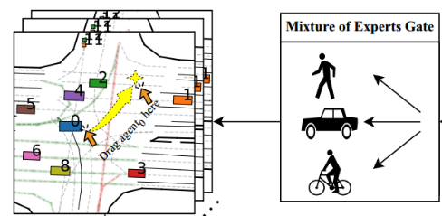
Dragtraffic: Interactive and Controllable Traffic Scene Generation for Autonomous Driving
Sheng WANG, Ge SUN, Fulong MA, Tianshuai HU, Qiang QIN, Yongkang SONG, Lei ZHU, Junwei Liang*
IROS 2024
-
Open-Vocabulary 3D Semantic Segmentation with Text-to-Image Diffusion Models
Xiaoyu Zhu, Hao Zhou, Pengfei Xing, Long Zhao, Hao Xu, Junwei Liang, Alexander Hauptmann, Ting Liu, Andrew Gallagher
ECCV 2024
-
An Examination of the Compositionality of Large Generative Vision-Language Models
Teli Ma, Rong Li, Junwei Liang*
NAACL 2024
Preprint.
-
Open-vocabulary Mobile Manipulation in Unseen Dynamic Environments with 3D Semantic Maps
Dicong Qiu, Wenzong Ma, Zhenfu Pan, Hui Xiong, Junwei Liang*
 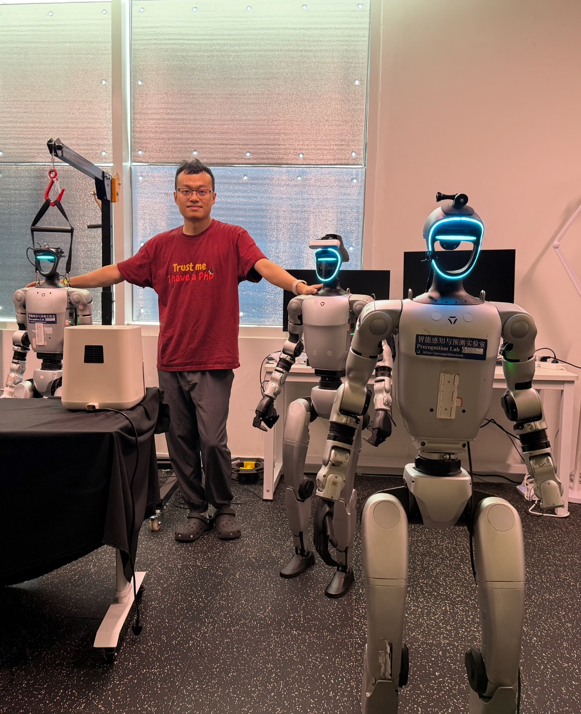
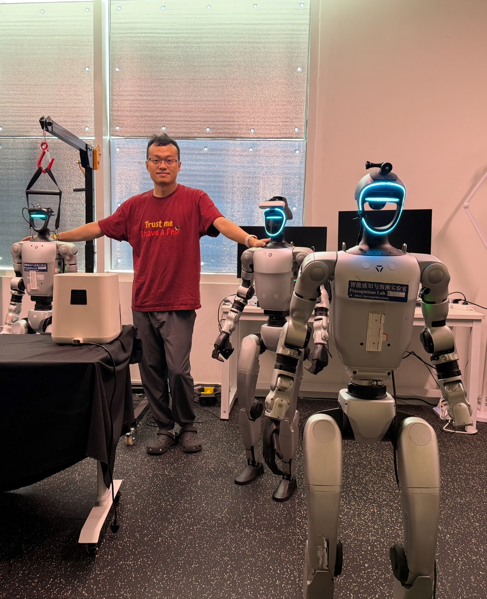